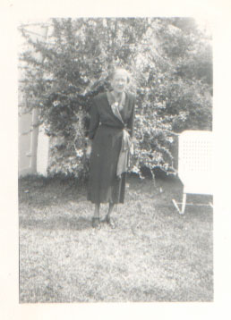
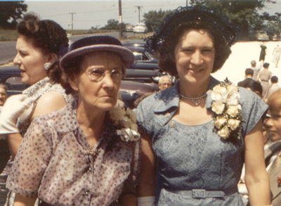

| Idella Candelis Wheeler was born Decmber 22nd, 1879 in Buncombe Co., NC. People called her "Dellar", and she usually signed her name that way.(NB) She married James Revis and together they had eight children. Her grandchildren called her "Mammo" or "Mammy". On 13 September 1953 she lost James to pneumonia. She died herself December 27th, 1957 and was buried with her husband in Mount Olivet Cemetery. |

|
Nota Bene: In old American English, still found in the Eastern Mountains and Massachusetts, a final "a" is pronounced like "ar". Anyone who's been to a meeting where the "agendar" was discussed or heard North Georgians talk about "Atlantar" knows that this dialect pronunciation lives on today.